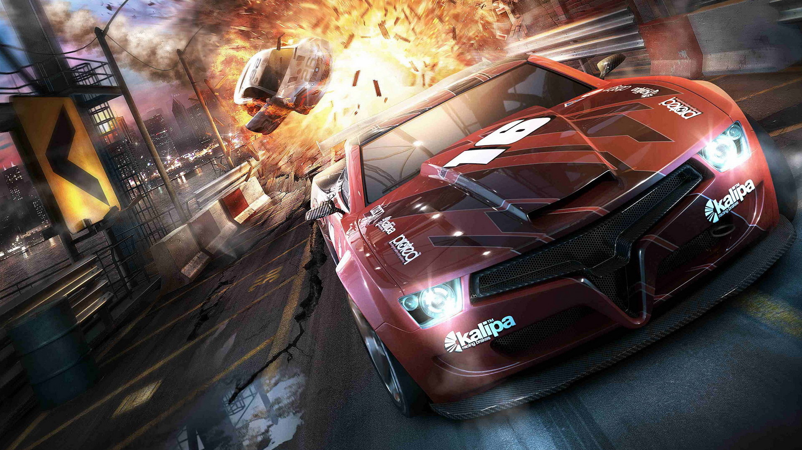

Gaming refers to the act of playing electronic games, whether through consoles,computers,
mobile phones
spacespace or another medium altogether. Although traditionally solitary form of relaxation, online multiplayer
spacevideo games have made gaming a popular group activity as well.
Gaming Content refers to the audio-visual content of the Game, including the visual
appearances of its
characters and matching in-game data that is produced and made available
to game content users or viewers
that any party may gather in connection with a certain game or sequel.
Gaming content can also refer
to various media like YouTube videos which showcase different games.
Another famous platform for gaming
content is Twitch. Here you may live stream, make videos,
and engage with your viewers as well as chat about
games. Your viewers will watch you while you
play games such as Valorant, mobile legends league of legends,
call of duty, and so on.